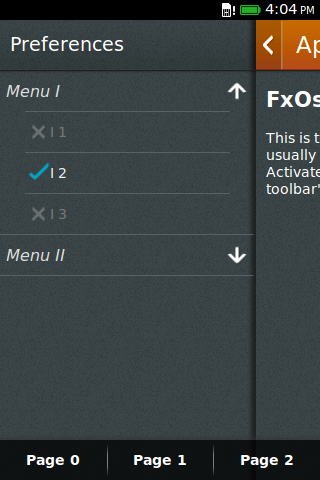
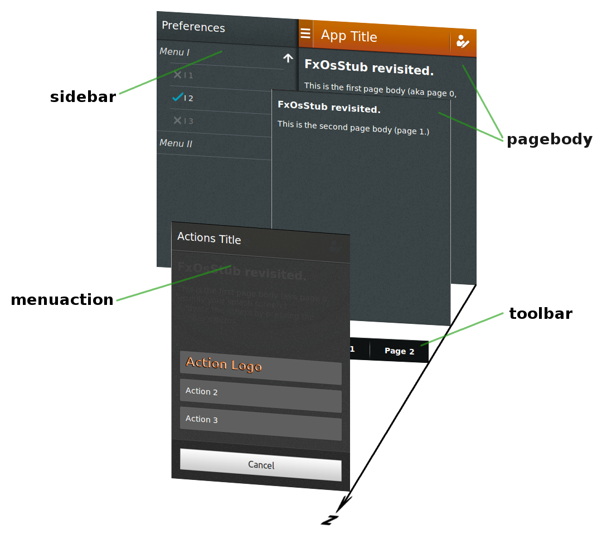

|  |
Nine months later, I had developed "Jaxogram", one of the first paid application
submitted to the Firefox Marketplace.
At this time, I had acquired a better knowledge of HTML 5 and CSS 3.
and the Firefox OS tools started to reach an outstanding quality level.
Although I don't feel anymore a newbie, I'm still reticent at using JQuery, Ajax, …. I want to keep a pure ISO-blessed attitude. One of the criteria in developing "Jaxogram" was to obtain an User Interface as close as possible to the recommendations of the Firefox Designers, the Firefox OS Look'n Feel. I followed the Building Firefox OS (BFFOS) guide, and added the "glue" between the blocks, to make them playing in a more collaborative way. In this chapter, I tried to make a synthesis of the techniques I applied, and determine to my best key points or generalizations suited for most FxOS applications. git clone -b gh-pages https://github.com/Jaxo/fxosstub |
<body>
<section class="principal">
<header>
<!-- the App main HEADER, with action buttons -->
</header>
<div id="page0" class="pagebody" aria-expanded="true">
<!-- contents -->
</div>
<div id="page1" class="pagebody">
<!-- contents -->
</div>
<footer class="toolbar">
<!-- Toolbar is here -->
</footer>
</section>
<section class="sidebar">
<!-- Side bar is here -->
</section>
<section class="menuaction">
<!-- menu action, full screen when activated -->
</section>
</body>
|  |
<section>'s of class
principal,
sidebar, and
menuaction;
principal <section> has a
<header>, followed by 1 or more
pagebody <div>, followed by a
toolbar <footer>; its size is the device size;
<section> has a header;
sidebar <section>, for example, is followed by
<header><h2>Preferences</h2></header>
pagebody <div> may have its own header,
superseding the application default header;
pagebody <div> should define
its corresponding toolbar, using an aria-owns attribute;
page0 <div> is declared as
<div id="page0" class="pagebody" aria-owns="tb0" aria-expanded="true">
tb0 identifying the ID of the corresponding menu
<menu
actionmenu <section> overlays
the principal <section>;
sidebar <section> acts as a drawer,
"pushing" the principal <section> to the right;
I tried hard to make this structure simple and easy to remember. No use of <article>, <aside>… IMHO, the W3C is not crystal clear — and could it possibly be, HTML being, by essence, a whole-purpose document type? Not wanting to open a can of worms, I decided to go “Keep It Simple, Stupid”, aka, “good enough is good enough”. Although, that may slightly change in the future.
Keeping the same approach as in BFFOS, each CSS files represents a "block" (name it "widget", if you prefer.) However, these files are not fully, but reasonably independent one of each others.
A minimal dependency is required for maintaining consistency among the several parts, not only for reaching some unity in the resulting look'n feel, but also to define and reuse style definitions. The latter minimizes the code, eases maintenance and changes, would allow later to create "skins".
Take "icons", for example. These are used in several places, and it would be no-sense to use different icons for <menuitem>'s or <header>'s.
Here is the list of our "widgets" CSS files:
Hence, some Javascript is required to show the interaction between blocks:
I attempted to shorten it as much as it was possible.
Considering "install.js" and "dispatcher.js" are apart,
all js/*.js files are pretty basic…
at the exception for js/menulist.js
for which a "longer" javascript was required for showing nice transitions.
This is the most simple page: a <section>
of class “principal”,
with a <header>.
In this header, the <button> element corresponds to the
button on the header's left side. It has a typical layout, as shown
here, in Building Blocks.
The
Mozilla site
describes the headers characteristics:
- A header is a horizontal bar the full width of the screen, which appears at the top of the screen in most apps.
- Headers float above content, with the option of flowing with content in special instances, such as in the Browser app.
- The heading's text provides the name of the current view.
- The heading may optionally include additional text; for example, in an email app, the number of unread messages may be displayed.
- Headers may include inputs for navigating and manipulating the current view.
- Most apps (full-screen games being an obvious exception) have a header.
The optional "inputs for navigating and manipulating the current view"
are the <li> children of a <ul> element.
Finally, the <button> and the <li>'s
elements might contain icons images, rather than text.
For this purpose, the element is assigned to
a class "icon", followed by the name of the icon.
The list below shows the icon names that have been actually defined.
It contains at least all "Standard icons buttons" as prescribed
by Mozilla/Firefox designers and some others added because it was required
for our demos.
These icons were copied from the Mozilla site, however the CSS techniques BFFOS used for representing icons have drastically changed during 2Q 2013. This list contains much more icons, and some names may differ.
Adding a toolbar is just to include the appropriate style file
(toolbar.css) and add a <footer>
containing a <menu>.
In turn, the <menu>, of type toolbar, contains
one or more <li>'(s) elements to indicate each relevant action.
However, could a toolbar be one and unique for the whole life of the application? Certainly not. A toolbar is context-driven. It must adapt to the context in which it is shown. Taking a look at what the Mozilla site says about toolbar's characteristics:
- Toolbars are always the full width of the screen, and are always the same height.
- Toolbars never scroll with content; instead, they float above content.
- Toolbars should always be positioned at the very bottom edge of the screen unless tabs are also present, in which case the toolbar is positioned at the top of the screen instead.
- Toolbars may contain a wide variety of elements, including buttons, filters, progress/activity indicators, and so forth.
<footer>element;
<footer class="toolbar"> element
must be able able to collect several <menu>'s,
the "arial-expanded" attribute of each telling which is the currently
selected one;
principal <section>.
It (aria-)owns the toolbar, as explained next.
Up to now, the examples picture only the decorations around the main content
on the screen: header and toolbar.
The main content is represented by a <div> of class
"pagebody", a child of the principal <section>:
Applications typically involve more than one single "page", and this is especially true when the size of the screen is a scarce resource. Press on the "Go to Page 2" toolbar item in the example below.
Versus the previous example at Step 3,
there are 2 pagebody <div>'s,
and 2 <menu>'s in the toolbar <footer>.
One can add here as many pages and toolbars as necessary.
Here is how the page switch works:
<menu> with "id=tb1",
(aria-)controls the element with "id=pg2";
"id=pg2" is the pagebody <div>
containing the Page 2;
pagebody <div> containing the Page 2
(aria-)owns the element with "id=tb2";
"id=tb2" is a <menu>,
a child of which is the menu item "go to Page 1";
<menu> containing
the menu item "go to Page 1" will show up.
For all other preceeding examples, no javascripts were needed.
This time, the "click" event has to be handled to produce an appropriate action
and javascript is required.
As for the CSS style, JavaScript code has been parceled out so that each
file relates to a widget.
The <header> of this example declares 2 script files:
pagebody;
it also activates the aria-expanded pagebody at the start;
<menu>;
it also ties the click on a menuitem to the action of revealing
its aria-control'led pagebody, if any.
Besides the pagebody <div>'s ability
to define its own toolbar, it also can define its own header.
This feature is required for "accessory pages" or "sub pages",
that is, pagebodies pertaining to the principal
<section> although introducing a different situation.
The overriding header follows same structure as the principal, overridden one. Most often, the left button is either for "cancel" or "back", the right button being for acknowledging.
<section>
distinct from the principal <section>.
It is represented as a sort of "drawer", putting away the
principal <section> when pulled.
Restarting from the 1st example (at step 1),
<head> element;
sidebar <section> follows
the principal <section> inside
the <body> element;
<button> in the <header> has an
id="sidebar_trigger" to tie a click to the action
"expand the sidebar".
That is all what is needed.
The sidebar.js
script contains a function for expanding/collapsing the sidebar and
ties the click on the id="sidebar_trigger" to this function
when the web page loads.
As for the sidebar, an action menu is a <section>
distinct from the principal <section>.
Press on "Action!" in the toolbar below…
The Mozilla site describes the headers characteristics:
- Opened from buttons within app content; these buttons are often inside toolbars (for example, the Browser app's "Share" button).
- Action menus contain one or more items.
- These menus expand in height to accomodate their items, to a maximum of the screen's height. Once that maximum height is reached, the content becomes scrollable vertically. Generally, the best practice is to try to include no more than five items plus a menu title.
- The title string is optional.
- The menu is closed by one of:
- Selecting one of the actions.
- Tapping the "Cancel" button.
Notice that one menu item contains a logo by just specifying
icon="actionLogo.png", where "actionLogo.png" is
the filename of the icon image.
A "Preferences" sidebar is obviously a good candidate
for a menu list.
The sidebar <section> contains
a <header> and a <div>
of class menulist, with the same contents
as the previous example.
Observe the slight transparency of the toolbar, which appears to hover the sidebar. And also: when the list item overflows the size of the screen, a vertical scroll bar pops up on a desktop computer. On a mobile device, the scroll bar won't show up: scroll is accomplished by a natural bottom-up swipe gesture.
source/chapter_2